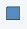

halt
NAME
halt - Halt the acquisition after the current scan.
DESCRIPTION
The command halt stops the acquisition after the current scan and writes the data to disk. It is the regular command to stop a running acquisition.

Note that halt does not complete the current phase cycle.
As an alternative to entering halt on the command line, you can click the  button of the TopSpin toolbar or in the acquisition window toolbar. If, for some reason, a running or hanging acquisition cannot be stopped with halt, you can try the stop command. If that does not work either, you can use kill. This command will show all active processes and you can click the go module to stop the acquisition.
The command halt can even be entered with an optional parameter as command halt <1...-NS> (please note that <1...-NS> must be integer and > 0). If <1...-Ns> is defined the execution of halt is delayed until the total number of scans reaches a multiple of <1...-NS>. This option is useful if a fid with a complete phase cycle should be stored to disk.
Please note that the command halt and its arguments does only work with AVANCE II and newer spectrometers.
As an alternative to typing halt <1...-NS> in the command line the button can be used from the TopSpin toolbar with this bottom:
This button opens the following dialogue:
OUTPUT PARAMETERS
All acquisition parameters
OUTPUT FILES
In a 1D Dataset:
- <dir>/data/<user>/nmr/<name>/<expno>/
- fid - raw data
- acqus - acquisition parameters
In a 2D Dataset:
- <dir>/data/<user>/nmr/<name>/<expno>/
- ser - raw data
- acqus - F2 acquisition status parameters
- acqu2s - F1 acquisition status parameters
In a 3D Dataset:
- <dir>/data/<user>/nmr/<name>/<expno>/
- ser - raw data
- acqus - F3 acquisition status parameters
- acqu2s - F2 acquisition status parameters
- acqu3s - F1 acquisition status parameters